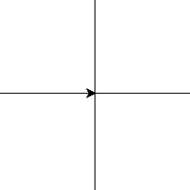
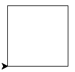
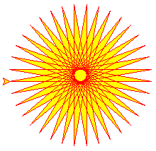

„Želví“ grafika – úvod
by Jiří Znamenáček
Úvod
Asi naprostá většina zobrazovacích nástrojů v běžném užití spočívá v kreslení čar a primitivních obrazců (v samém základu často trojúhelníků) ve vybrané soustavě souřadné. Dokonce dnes už často ani není jednoduše možné vykreslovat do vymezené plochy (běžně zvané plátno aneb canvas) jednotlivé body – snad z důvodů vnitřní implementace grafických operací, snad i kvůli náročnosti na větších displejích.
V kontrastu s tím užívá želví grafika (vymyšlená pravděpodobně pro jazyk LOGO už v šedesátých letech) převážně vektorové povely pro řízení kurzoru v ploše (často také vybavené kartézskými souřadnicemi, které nicméně nejsou primárním prvkem). Kromě hraní si pro děti je její velkou výhodou možnost kreslit rekurzivní algoritmy tak říkajíc přímo, bez potřeby počítání a přenášení mezivýsledků.
Základní principy I
Vykreslovací kurzor, naprosto vážně zvaný želva, je řízen především následujícími příkazy:
- pozice – posun vpřed (nebo vzad) o zadaný počet „kroků“;
- orientace – otočení směru „chůze“ o zadaný úhel daným směrem;
- stav kreslicího pera – je-li zvednuté či nikoli (tedy zda kreslí nebo ne), jak tlustou čáru a jakou barvou vykresluje.
Tuto základní sadu vektorově orientovaných příkazů doplňují podle implementace nejrůznější další, takže kromě uschování stavu „želvy“ ji také často můžete přímo posouvat na určené souřadnice a podobně.
Základní principy II
Výchozí pozicí „želvy“ po startu systému je počátek soustavy souřadné (střed okna) a otočení směrem na východ (tedy vpravo):

Pokud jí neřeknete jinak, „želva“ za sebou kreslí cestu během každého svého pohybu!
V procedurálně orientovaném přístupu můžete „želvu“ ovládat přímo voláním příslušných příkazů na modulu turtle. Chcete-li však v obrázku (singletonová instance objektu Screen) najednou více různých „želv“, musíte si každou z nich vyrobit jako instanci objektu Turtle (či Pen) a ovládat ji jejími metodami.
Příklad – čtverec

Vidíme, že „želva“ nakreslí poměrně rychle – přesto ale viditelně – postupně všechny strany čtverce a to zjevně od počátku kartézské soustavy souřadné v prvním kvadrantu.
Komentář
Než budeme pokračovat složitějšími vlastnostmi a příklady želví grafiky, pár poznámek:
- Jakožto výukový nástroj kreslí „želva“ ve výchozím nastavení jen tak rychle, aby bylo vidět, co dělá. Rychlost vykreslování se ale dá v jistém rozmezí ovládat a dokonce se dá zařídit, aby se objevil až celý výsledný obrázek.
- Umístění soustavy souřadné ve vykreslovací ploše je možno řídit. Dokonce ani souřadné osy nemusí býti stejného měřítka. (Příkaz pro kružnici pak ale samozřejmě bude kreslit elipsu :-)
-
„Želva“ se pohybuje po kanvasu grafického nástroje tkinter, tudíž se k ní musíme chovat jako ke GUI – nemá-li se pythoní program ukončit na poslední řádce interpretovaného kódu, musíme naskočit do klasické udržovací/čekací smyčky GUI (proto onen příkaz
turtle.mainloop()na konci příkladu, ale jde to i jinak).
Postupně si ukážeme, co všechno dalšího se se „želvou“ dá dělat, ale pro netrpělivé je tu odkaz do oficiální dokumentace.
Příklad – hvězda
Nepřekvapivě je „želva“ úplně skvělá na kreslení opakovaných jednoduchých částí kresby, které složené dohromady dají něco úplně jiného (upraveno z dokumentace):

Poznámky
-
color(BarvaPera, BarvaVýplně)– zkratka za samostatné nastavení obou barev (příkazypencolor()afillcolor()). -
begin_fill(),end_fill()– obrazec vykreslený mezi spolu souvisejícími těmito dvěma příkazy bude vyplněn dříve vybranou barvou. -
forward(KROKŮ)– posune „želvu“ o KROKŮ směrem, kterým je právě natočena. -
left(ÚHEL)– otočí směr, kterým se želva dívá, o ÚHEL stupňů doleva. -
pos()– zkratka za plný příkazposition(); vrací aktuální souřadnice „želvy“ ve tvaru dvojce (x, y). Uvedená dvojce je rozšíření obecné pythoní n-tice do podoby objektu turtle.Vec2D, který podporuje mimo jiné i skalární součin (operátor*) a rotaci (metodarotate(ÚHEL)). -
done()– nepřekvapivě další zkratka/alias, tentokrát na funkcimainloop().
Na závěr
Ačkoli byla želví grafika vymyšlena jako vizuální doplněk převážně výukového programovacího jazyka LOGO (kterážto kombinace tak plní podobnou úlohu jako jazyk KAREL, byť s jinými výrazovými prostředky), našla brzy využití i v úplně jiných a nečekaných oblastech:
- zobrazování simulací růstu živých organismů (v podobě tzv. L-systémů);
- kreslení fraktálních obrazců;
- grafický výstup programů (a to včetně jednoduchých her);
- …
V podstatě se dá říci, že kde je úloha snadno popsatelná relativními pohyby kreslicího kurzoru, tam je želví grafika vhodná. Tím spíš, jde-li úloha zapsat rekurzivně.